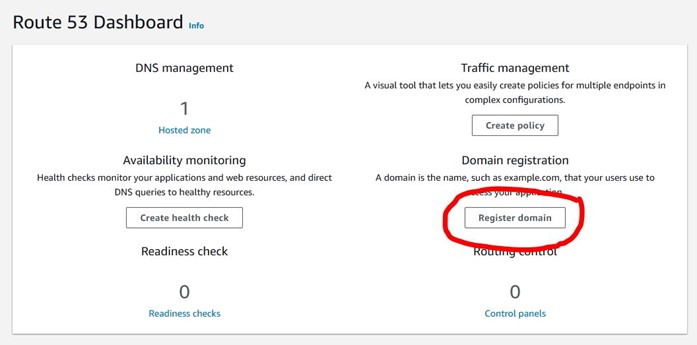
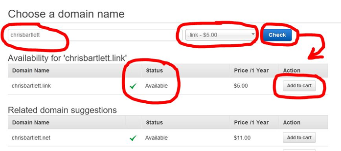
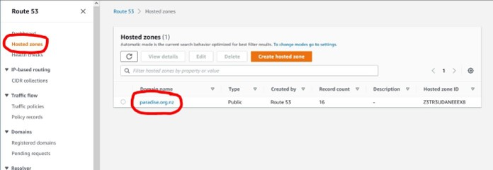
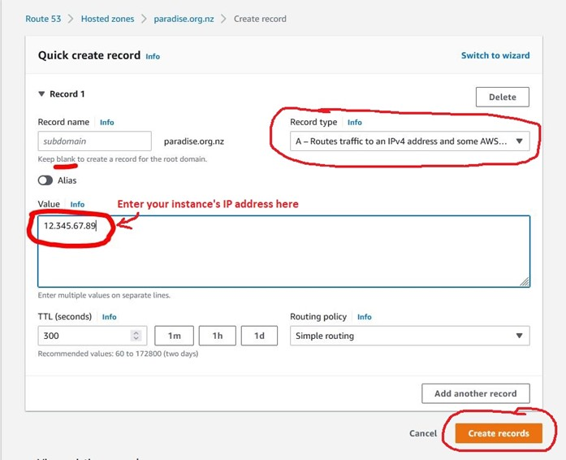
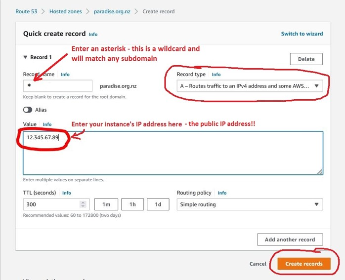
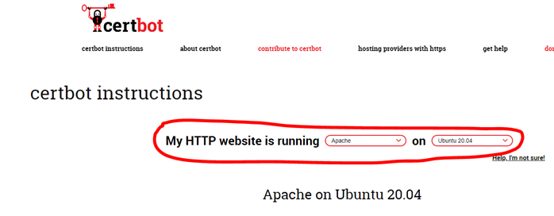

4 April 2023, Chris Bartlett
IMPORTANT: Read all instructions before starting.
This document shows how to get a domain name and set up a basic website.
In the past we have used free domains, but the service we used now allows only one free domain. We need to be able to create a number of domains (actually subdomains) for the website projects we work on. It is possible to get a domain for US$5 (annual) from Amazon, which is what I show here.
Go to the AWS Route 53 service and click Register Domain:
For this course I require you to have your name in your domain, so that support and marking etc., is manageable. If you already have a domain and want to use that, please discuss with me.
Enter your name (lowercase, no spaces) and choose the .link domain (this is the cheapest, at US$5). Click the “Check” button to make sure the domain is available. Modify your name if it isn't (e.g., add a middle initial and check again). Add the domain name to the cart.

Click the Continue button (scroll down to find it) and then fill out the registrant contact
details with your information.
Continue to the final screen (Verify & Purchase). You might want to choose “Disable” for the “Do
you want to automatically renew your domain?” question.
Complete the order.
You have to link your new domain name with your instance’s IP address. Go to the Route53 service and click Hosted zones in the left-side menu. Then click your domain name:
Then click the “Create record” button. On the next screen enter your IP address and click Create Records.
The Domain Name System cannot guess that your subdomains (e.g., test.hemibrown.org) are hosted where your main domain points in the DNS. You need a wildcard A record in the DNS if you want any subdomain to point at your instance. Click “Create record” again, but this time enter * (the asterisk character) in the Record Name field, as shown in the following screenshot. Click “Create Records” when you are done.
Because you are going to set up several websites, you should make use of subdomains for each one. For example, if your main domain name is hemibrown.link, then you should set up each website with its own subdomain; e.g., you might have three websites with the following subdomains:
Each website should be in its own directory in the /var/www directory. It is advisable to name those directories to match the domain names in some way, to avoid confusion. For example, the websites for the domains above could be in these directories:
When you create the Apache configuration files for each website (see below) you should also name them to match the website subdomains. For example, the websites for the domains above could be configured in these files:
There is nothing magic about this suggested naming convention (names of files and directories do not have to match), but you will get very confused if they don’t!
NOTE: Where it says “your-project-name” below, substitute something you choose, following the suggested naming conventions above. Do not use spaces.
Connect to your instance via SSH (e.g., using PuTTY). Create a configuration file for your website, based on the default configuration file. The next command is one line:
sudo cp /etc/apache2/sites-available/000-default.conf /etc/apache2/sites-available/your-project-name.confEdit the website’s configuration file:
sudo nano /etc/apache2/sites-available/your-project-name.conf#ServerName www.example.comServerName your.website.domainDocumentRoot /var/www/htmlDocumentRoot /var/www/your-project-namectrl-x (answer y, then press enter)sudo mkdir /var/www/your-project-namesudo chown ubuntu /var/www/your-project-namesudo a2ensite your-project-namesudo systemctl reload apache2Create an HTML file called index.html (or get some web files, such as the case study) and upload it into the directory you created for the website above, using WinSCP (connect in the same basic way you did with PuTTY, with the ubuntu user name and the key file). Test it in your web browser.
If you have not already done this, install Certbot (you only need to do this the first time),
following the instructions on the Certbot website: https://certbot.eff.org/
Note: Only run through Steps
1 to 6
Make sure you choose the right options to get the appropriate instructions, as in the image below (note that the instructions for Ubuntu 20 also work for 22, which you have installed): 
Use Certbot to get a security certificate and install it (NOTE: do not use the certificate-only instructions). You will be required to answer a number of questions.
sudo certbot --apache